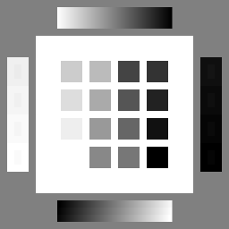
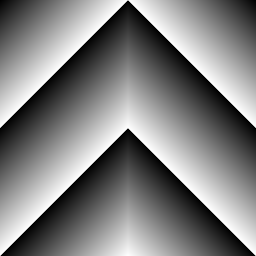
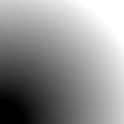
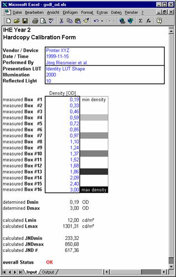
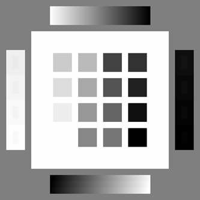
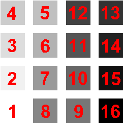
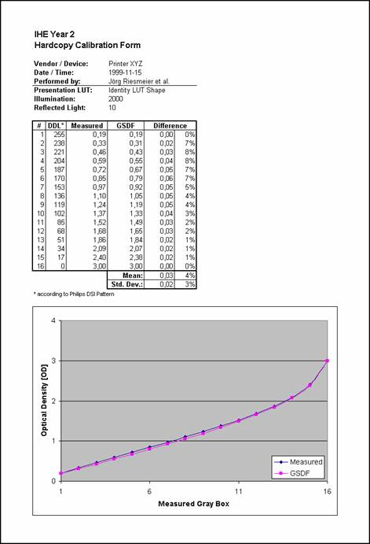

HIMMS and RSNA
IHE
Integrating the Healthcare Enterprise
Test Plan for Print Servers
Marco Eichelberg, Klaus Kleber, Jörg Riesmeier
Adapted in Year 5 by David Maffitt
Rev: 2003-07-01
Kuratorium OFFIS e.V., Escherweg 2, 26121 Oldenburg, Germany
Institute for Microtherapy, Universitätsstraße 142, 44799 Bochum, Germany
Mallinckrodt Institute of Radiology,
Washington University, St. Louis, MO, USA
Contents
Introduction
Test Procedure for Print Servers
Prerequisites
Configuring and Using the DICOMscope Print SCU
The Test Cases for Transmissive Media (Film) Printers
The Test Cases for Reflective Media (Paper) Printers
Using the Excel Spreadsheet to Assess GSDF Conformance
This document is intended for Print Server Actors in the CPI Profile (see RAD TF-1:5). Print Server Actors are required to implement the IHE “Print Request with Presentation LUT“ [RASD-23] Transaction defined in RAD TF-2:4:23. This document specifies a number of test cases which allow to assess:
The section Test Procedures for Print Servers describes prerequisites of this test plan, how to set up and perform the test cases, and how to use the Excel spreadsheet that is used to assess the measured results from many of the test cases.
The section Print Server Test Results contains a form to be filled in with a Print Server’s test results.
If a vendor supplies more than one Print Server, or if the Print Server can be operated in different modes which exhibit different behavior on the DICOM network protocol level, the tests should be run for each Print Server or mode of operation, and multiple copies of the form should be filled in.
These tests corresponds to MESA test number 523.
You are required to send the the following to the project management:
These result files in a zipped archive can be uploaded to the Connectathon webtool as MESA test 523 results.
The following items are required for performance of the Test Plan:
When unpacked, the Print Server test case distribution creates a directory (which may be a subdirectory of the total MESA distribution) called printscp_testcases. This directory contains the test patterns and configuration files required to perform the Print Server test cases. It should also contain two applications (binaries) in the bin subdirectory:
dbregimg (dbregimg.exe on Windows)
dcmprscu (dcmprscu.exe on Windows)
You should verify that these two binaries are present. If you are compiling the MESA tools from source code, these two applications are created as part of the DCMTK DICOM toolkit. After compilation, the dbregimg binary can be found in dcmtk/imagectn/tests and the dcmprscu binary can be found in dcmtk/dcmpstat/apps. If the DCMTK tools have been installed with “make install” according to the installation instructions, both tools should be present in the installation directory, e. g. /usr/local/dicom/bin. In addition to these two binaries, the file dicom.dic is required in the lib subdirectory on Unix platforms. This file is also contained in the DCMTK DICOM toolkit in dcmtk/dcmdata/libsrc and is installed during “make install” in /usr/local/dicom/lib.
The next step is to load the configuration file printscp_test.cfg that is distributed as part of the Print Server test cases into your text editor and to adapt it for your local Print Server settings. You will the following comment in the configuration file five times, with different numbers for X:
# --- adjust the next X lines to match your print SCPs characteristics
Please adapt these settings according to the network address and capabilities of the Print Server under test (see table below), and leave everything else unchanged. Save the updated configuration file.
Keyword |
Value |
Description |
Hostname |
string |
The IP number or domain name of the Print Server in conventional TCP/IP notation. |
Port |
1..65535 |
IP port number under which the Print SCP receives DICOM associations. |
AETitle |
string |
DICOM application entity title used by the Print SCP to identify itself during association negotiation. |
Supports12Bit |
true or false |
Value should be “true” if the Print Server accepts image pixel data with 12 bits/pixel. If the Print Server only accepts image pixel data with 8 bits/pixel, the value should be “false”. Please note that this setting is only related to the Print Server’s ability to handle 12 bit image data on the DICOM network protocol level. It is not related to the ability of the printer hardware to process 12 bit image data. |
PresentationLUTinFilmSession |
true or false |
The 1999 edition of the DICOM standard contains an inconsistency in the definition of the Presentation LUT SOP class. The attributes "Referenced Presentation LUT", "Illumination" and "Reflected Ambient Light" can either be part of the Basic Film Session or be part of the Basic Film Box. DICOM Correction Proposal CP 173 defined that these attributes have to be specified on Basic Film Box level, and this is also a requirement according to the Technical Framework. Nevertheless, if the Print Server only accepts these elements on Film Session level, this behavior can be activated in the Print SCU by setting this value to “true”. |
The test cases are shipped with a Shell script (for Unix systems) and a Batch file (for Windows systems) which allow to perform individual test cases or all of the tests in a single batch. The script is invoked as “printscp_test”, followed by a single parameter:
For each performed test case a log file is created in the log subdirectory. The filename is XXX.log, where XXX is the number of the test case in three digit notation. This is a plain text file that can be viewed and printed with any text editor. It contains a detailed log of all DICOM network communication performed between the Print SCU and the Print Server under test. This file should be consulted if any problems occur during performance of the test cases, e. g. if no hardcopies are printed.
The Print Server test cases make use of four test patterns which are printed with different parameters.
 |
 |
DSITest Pattern |
Wedge Pattern |
|
 |
12-Bit Wedge Pattern |
Pixel Aspect Ratio Pattern |
The tests specified in this section are intended for transmissive media (film) printers only. An identical set of test for reflective media (paper) printers is provided in the following section. The test sets only differ in the use of the “Illumination” and “Reflected Ambient Light” attributes and in the maximum and minimum optical density, which differ for film and paper.
The first set of tests examines whether the Print Server correctly creates GSDF calibrated hardcopies. Each test sends a single image, a Presentation LUT and well-defined lighting conditions to the Print Server.
Test #001: GSDF Curve under Default Lighting Conditions |
This test print contains the dsitest pattern (see The Test Cases for Reflective Media (Paper) Printers) printed under lighting conditions which are typical for screen/film systems. |
Evaluation |
The hardcopy should match the GSDF for Illumination=2000, Reflected Ambient Light=10. |
Test #002: GSDF Curve under unusual Lighting Conditions |
This test print contains the dsitest pattern (see The Test Cases for Reflective Media (Paper) Printers) printed under lighting conditions which are unusual for screen/film systems – the illumination is rather dim and the reflection caused by ambient light is very high. The Print Server must be able to match the GSDF for these values. |
Evaluation |
The hardcopy should match the GSDF for Illumination=1000, Reflected Ambient Light=100. |
Test #003: GSDF Curve with Presentation LUT (256 Entries), Default Lighting Conditions |
This test print contains the dsitest pattern (see The Test Cases for Reflective Media (Paper) Printers) printed under lighting conditions which are typical for screen/film systems. This test uses a real Presentation LUT (look-up table) with 256 entries instead of a Presentation LUT Shape. It is sufficient if either test #003 or test #004 is passed. |
Evaluation |
The hardcopy should match the GSDF for Illumination=2000, Reflected Ambient Light=10. |
Test #004: GSDF Curve with Presentation LUT (4096 Entries), Default Lighting Conditions |
This test print contains the dsitest pattern (see The Test Cases for Reflective Media (Paper) Printers) printed under lighting conditions which are typical for screen/film systems. This test uses a real Presentation LUT (look-up table) with 4096 entries instead of a Presentation LUT Shape. It is sufficient if either test #003 or test #004 is passed. |
Evaluation |
The hardcopy should match the GSDF for Illumination=2000, Reflected Ambient Light=10. |
Test #005: GSDF Curve with Presentation LUT (256 Entries), unusual Lighting Conditions |
This test print contains the dsitest pattern (see The Test Cases for Reflective Media (Paper) Printers) printed under lighting conditions which are unusual for screen/film systems – the illumination is rather dim and the reflection caused by ambient light is very high. The Print Server must be able to match the GSDF for these values. This test uses a real Presentation LUT (look-up table) with 256 entries instead of a Presentation LUT Shape. It is sufficient if either test #005 or test #006 is passed. |
Evaluation |
The hardcopy should match the GSDF for Illumination=1000, Reflected Ambient Light=100. |
Test #006: GSDF Curve with Presentation LUT (4096 Entries), unusual Lighting Conditions |
This test print contains the dsitest pattern (see The Test Cases for Reflective Media (Paper) Printers) printed under lighting conditions which are unusual for screen/film systems – the illumination is rather dim and the reflection caused by ambient light is very high. The Print Server must be able to match the GSDF for these values. This test uses a real Presentation LUT (look-up table) with 4096 entries instead of a Presentation LUT Shape. It is sufficient if either test #005 or test #006 is passed. |
Evaluation |
The hardcopy should match the GSDF for Illumination=1000, Reflected Ambient Light=100. |
The second set of tests examines whether the Print SCP’s Presentation LUT implementation affects the image quality on the rendered film. Each test sends an image and a Presentation LUT to the printer. The resulting film is checked for aliasing artifacts (“edges” or “diagonal lines”) visible on the film, which indicate that the display curve of the Print SCP is not smooth enough to produce a high quality result.
Test #010: Test for Visual Artifacts, 8-bit image data with Presentation LUT Shape |
This test print contains the wedge pattern (with 256 different shades of gray) printed under default lighting conditions with an IDENTITY Presentation LUT Shape. |
Evaluation |
This test is evaluated visibly (by a human observer). The hardcopy should not contain visible contours – the transition from dark to bright within the wedge should be smooth. Diagonal lines visible on the wedge indicate a reduced image quality resulting either from a loss of shades of gray as a result of the image processing in the printer, or from “steps” in the display curve. |
Test #011: Test for Visual Artifacts, 8-bit image data with Presentation LUT (256 entries) |
This test print contains the wedge pattern (with 256 different shades of gray) printed under default lighting conditions. This test uses a real Presentation LUT (look-up table) with 256 entries instead of a Presentation LUT Shape. It is sufficient if either test #011 or test #012 is passed. |
Evaluation |
This test is evaluated visibly (by a human observer). The hardcopy should not contain visible contours – the transition from dark to bright within the wedge should be smooth. Diagonal lines visible on the wedge indicate a reduced image quality resulting either from a loss of shades of gray as a result of the image processing in the printer, or from “steps” in the display curve. The Presentation LUT used for this test should result in a hardcopy that is slightly brighter in the mid-tone areas than the result of test #10. |
Test #012: Test for Visual Artifacts, 8-bit image data with Presentation LUT (4096 entries) |
This test print contains the wedge pattern (with 256 different shades of gray) printed under default lighting conditions. This test uses a real Presentation LUT (look-up table) with 4096 entries instead of a Presentation LUT Shape. It is sufficient if either test #011 or test #012 is passed. |
Evaluation |
This test is evaluated visibly (by a human observer). The hardcopy should not contain visible contours – the transition from dark to bright within the wedge should be smooth. Diagonal lines visible on the wedge indicate a reduced image quality resulting either from a loss of shades of gray as a result of the image processing in the printer, or from “steps” in the display curve. The Presentation LUT used for this test should result in a hardcopy that is slightly brighter in the mid-tone areas than the result of test #10. |
Test #013: Test for Visual Artifacts, 12-bit image data with Presentation LUT Shape |
This test print contains the 12-bit wedge pattern (with 4096 different shades of gray) printed under default lighting conditions with an IDENTITY Presentation LUT Shape. |
Evaluation |
This test is evaluated visibly (by a human observer). The hardcopy should not contain visible contours – the transition from dark to bright within the wedge should be smooth. Diagonal lines visible on the wedge indicate a reduced image quality resulting either from a loss of shades of gray as a result of the image processing in the printer, or from “steps” in the display curve. |
Test #014: Test for Visual Artifacts, 12-bit image data with Presentation LUT (256 entries) |
This test print contains the 12-bit wedge pattern (with 4096 different shades of gray) printed under default lighting conditions. This test uses a real Presentation LUT (look-up table) with 256 entries instead of a Presentation LUT Shape. It is sufficient if either test #014 or test #015 is passed. |
Evaluation |
This test is evaluated visibly (by a human observer). The hardcopy should not contain visible contours – the transition from dark to bright within the wedge should be smooth. Diagonal lines visible on the wedge indicate a reduced image quality resulting either from a loss of shades of gray as a result of the image processing in the printer, or from “steps” in the display curve. The Presentation LUT used for this test should result in a hardcopy that is slightly brighter in the mid-tone areas than the result of test #10. |
Test #015: Test for Visual Artifacts, 12-bit image data with Presentation LUT (4096 entries) |
This test print contains the 12-bit wedge pattern (with 4096 different shades of gray) printed under default lighting conditions. This test uses a real Presentation LUT (look-up table) with 4096 entries instead of a Presentation LUT Shape. It is sufficient if either test #014 or test #015 is passed. |
Evaluation |
This test is evaluated visibly (by a human observer). The hardcopy should not contain visible contours – the transition from dark to bright within the wedge should be smooth. Diagonal lines visible on the wedge indicate a reduced image quality resulting either from a loss of shades of gray as a result of the image processing in the printer, or from “steps” in the display curve. The Presentation LUT used for this test should result in a hardcopy that is slightly brighter in the mid-tone areas than the result of test #10. |
The third set of tests sends a couple of print jobs to the Print SCP, each of which exercises different aspects of the DICOM print protocol.
Test #020: Referenced Presentation LUT SQ on Film Session Level |
This test print sends a Referenced Presentation LUT Sequence as part of the Basic Film Session N-CREATE request. The interesting question is, whether the Print Server accepts this element and whether a Referenced Presentation LUT Sequence is sent back as part of the N-CREATE response message created by the Print Server. |
Evaluation |
The log file for this test case (log/020.log) should be examined. If the Print Server accepts the Referenced Presentation LUT Sequence and sends back a Referenced Presentation LUT Sequence as part of the Basic Film Session N-CREATE request, the Print Server implementation does not implement DICOM Correction Proposal 173. If the N-CREATE response contains an error status code, or if the Basic Film Session N-CREATE response does not contain a Referenced Presentation LUT Sequence but the Basic Film Box N-CREATE response does, the Print Server implements DICOM Correction Proposal 173. The test is passed if the Print Server supports CP 173. |
Test #021: Referenced Presentation LUT SQ on Film Box Level |
This test print sends a Referenced Presentation LUT Sequence as part of the Basic Film Box N-CREATE request. The interesting question is, whether the Print Server accepts this element and whether a Referenced Presentation LUT Sequence is sent back as part of the N-CREATE response message created by the Print Server. |
Evaluation |
The log file for this test case (log/020.log) should be examined. If the Print Server accepts the Referenced Presentation LUT Sequence and sends back a Referenced Presentation LUT Sequence as part of the Basic Film Box N-CREATE request, the Print Server implementation supports DICOM Correction Proposal 173. If the N-CREATE response contains an error status code, or if the Basic Film Box N-CREATE response does not contain a Referenced Presentation LUT Sequence but the Basic Film Session N-CREATE response does, the Print Server does not implement DICOM Correction Proposal 173. The test is passed if the Print Server supports CP 173. |
Test #022: Landscape Orientation |
This test prints the dsitest pattern in landscape orientation. |
Evaluation |
The hardcopy should display the dsitest pattern in landscape orientation. If no hardcopy is created, or if the dsitest pattern is printed in portrait orientation, the Print Server does not support landscape orientation and the test is not passed. |
Test #023: Maximum Density |
This test print contains the dsitest pattern printed under lighting conditions which are typical for screen/film systems. However, the Print Server is requested to print the image with a maximum density of 1.5 OD instead of the printer default (which is around 3.0 OD on many printers). |
Evaluation |
The hardcopy should match the GSDF for Illumination=2000, Reflected Ambient Light=10. The maximum density should be 1.5 OD. Use Excel spreadsheet described in The Test Cases for Reflective Media (Paper) Printers to assess conformance. |
Test #024: Minimum Density (optional) |
This test print contains the dsitest pattern printed under lighting conditions which are typical for screen/film systems. However, the Print Server is requested to print the image with a minimum density of 1.0 OD instead of the printer default (which is around 0.2 OD on many printers). |
Evaluation |
The hardcopy should match the GSDF for Illumination=2000, Reflected Ambient Light=10. The minimum density should be 1.0 OD. Use Excel spreadsheet described in The Test Cases for Reflective Media (Paper) Printers to assess conformance. |
Test #025: Collation (optional) |
This test prints the dsitest pattern using an N-ACTION request on Basic Film Session level (instead of the Basic Film Box level which is used in all other tests). |
Evaluation |
The result should equal the result from test #001. If no hardcopy is printed, the Print Server does not support collation and the test is not passed. |
Test #026: 8-bit Image Transmission (optional) |
This test prints the dsitest pattern. The pattern is transmitted with 8 bits/pixel in the Basic Grayscale Image Box. |
Evaluation |
The result should equal the result from test #001. |
Test #027: 12-bit Image Transmission (optional) |
This test prints the dsitest pattern. The pattern is transmitted with 12 bits/pixel in the Basic Grayscale Image Box. |
Evaluation |
The result should equal the result from test #001. |
Test #028: Pixel Aspect Ratio |
This test prints the Pixel Aspect Ratio Test Pattern with a pixel aspect ratio of 4:1. |
Evaluation |
The hardcopy should display a square image. If the image is a rectangle, the Print Server does not support Pixel Aspect Ratio and the test is not passed. |
Test #029: Requested Image Size (optional) |
This test prints the dsitest pattern with a requested image size of 127mm (5”). |
Evaluation |
The hardcopy should display the dsitest image with a size of 127x127mm (5x5”). If no hardcopy is created, or if the image is printed with a size different from 127x127mm, the Print Server does not support Requested Image Size and the test is not passed. |
Test #030: Polarity (optional) |
This test sends an inverted dsitest pattern to the printer and sets polarity to “REVERSE”. |
Evaluation |
The result should equal the result from test #001. |
Test #031: MONOCHROME 1 (optional) |
This test sends a dsitest pattern using MONOCHROME1 photometric interpretation to the printer. |
Evaluation |
The result should equal the result from test #001. |
This set of tests checks details of the Print SCPs implementation of the Presentation LUT SOP Class.
Test #040: LIN OD Presentation LUT Shape (optional) |
This test sends a dsitest pattern that has been converted to a value space linear to optical density. A Presentation LUT Shape of “LIN OD” is used. The image has been processed to be linear to the optical densities of a hardcopy printed with Dmax = 3.0 OD, Dmin = 0.2 OD, on a GSDF calibrated printer with Illumination = 2000 cd/m2 and Reflected Ambient Light = 10 cd/m2. |
Evaluation |
The result should equal the result from test #001, or at least be very similar. |
Test #041: Presentation LUT with 256 entries, Image with 8 bits/pixel (optional) |
This test print creates a Presentation LUT with 256 entries and transmits the dsitest pattern with 8 bits/pixel. |
Evaluation |
The result should equal the result from test #001. |
Test #042: Presentation LUT with 4096 entries, Image with 12 bits/pixel (optional) |
This test print creates a Presentation LUT with 4096 entries and transmits the dsitest pattern with 12 bits/pixel. |
Evaluation |
The result should equal the result from test #001. |
Test #043: Presentation LUT with 256 entries, Image with 12 bits/pixel (optional) |
This test print creates a Presentation LUT with 256 entries and transmits the dsitest pattern with 12 bits/pixel. |
Evaluation |
The result should equal the result from test #001. |
Test #044: Presentation LUT with 4096 entries, Image with 8 bits/pixel (optional) |
This test print creates a Presentation LUT with 4096 entries and transmits the dsitest pattern with 8 bits/pixel. |
Evaluation |
The result should equal the result from test #001. |
Test #045: Presentation LUT with 256 entries and 11 bits/entry (optional) |
This test print creates a Presentation LUT with 256 entries and transmits the dsitest pattern with 8 bits/pixel. The Presentation LUT is unusual because the number of significant bits per entry is 11. |
Evaluation |
The result should equal the result from test #001. |
Test #046: Presentation LUT with 256 entries and 13 bits/entry (optional) |
This test print creates a Presentation LUT with 256 entries and transmits the dsitest pattern with 8 bits/pixel. The Presentation LUT is unusual because the number of significant bits per entry is 13. |
Evaluation |
The result should equal the result from test #001. |
Test #047: Scrambled Presentation LUT and Image (optional) |
This test print creates a Presentation LUT with 4096 entries and transmits the dsitest pattern with 12 bits/pixel. Both Presentation LUT and Image pixel data are scrambled such that only a correct application of the Presentation LUT restores a visible image. |
Evaluation |
The result should equal the result from test #001. |
Test #048: Presentation LUT with OW value representation (optional) |
This test print creates a Presentation LUT with 4096 entries and transmits the dsitest pattern with 12 bits/pixel. The Presentation LUT is unusual because the DICOM Value Representation of the LUT is “OW”. This value representation has been introduced for LUT Data in DICOM Supplement 33 in 1999. |
Evaluation |
The log file for this test case (log/048.log) should be examined. If the Print Server accepts the Presentation LUT N-CREATE request, it may be assumed that the Print Server supports LUT Data with OW value representation. Otherwise, the test is not passed. |
This set of tests tries out the most common image display formats (page layouts). All tests in this section are optional.
Test #050: 2x2 Layout (optional) |
This test creates and prints a Basic Film Box with an image display format (page layout) of “STANDARD\2,2”. |
Evaluation |
The result should show the dsitest and the wedge pattern tiled on a print-out with 2x2 image boxes. |
Test #051: 3x5 Layout (optional) |
This test creates and prints a Basic Film Box with an image display format (page layout) of “STANDARD\2,2”. |
Evaluation |
The result should show the dsitest and the wedge pattern tiled on a print-out with 3x5 image boxes. |
Test #052: 4x5 Layout (optional) |
This test creates and prints a Basic Film Box with an image display format (page layout) of “STANDARD\2,2”. |
Evaluation |
The result should show the dsitest and the wedge pattern tiled on a print-out with 4x5 image boxes. |
Test #053: 4x6 Layout (optional) |
This test creates and prints a Basic Film Box with an image display format (page layout) of “STANDARD\2,2”. |
Evaluation |
The result should show the dsitest and the wedge pattern tiled on a print-out with 4x6 image boxes. |
The tests specified in this section are intended for reflective media (paper) printers only. An identical set of test for transmissive media (film) printers is provided in the previous section. The test sets only differ in the use of the “Illumination” and “Reflected Ambient Light” attributes and in the maximum and minimum optical density, which differ for film and paper.
The first set of tests examines whether the Print Server correctly creates GSDF calibrated hardcopies. Each test sends a single image, a Presentation LUT and well-defined lighting conditions to the Print Server.
Test #101: GSDF Curve under Default Lighting Conditions |
This test print contains the dsitest pattern (see The Test Cases for Reflective Media (Paper) Printers) printed under lighting conditions which are typical for reflective media. |
Evaluation |
The hardcopy should match the GSDF for Illumination=150, Reflected Ambient Light=0. |
Test #102: GSDF Curve under unusual Lighting Conditions |
This test print contains the dsitest pattern (see The Test Cases for Reflective Media (Paper) Printers) printed under unusual lighting conditions for reflective media – the illumination is extremely bright. The Print Server must be able to match the GSDF for these values. |
Evaluation |
The hardcopy should match the GSDF for Illumination=500, Reflected Ambient Light=0. |
Test #103: GSDF Curve with Presentation LUT (256 Entries), Default Lighting Conditions |
This test print contains the dsitest pattern (see The Test Cases for Reflective Media (Paper) Printers) printed under lighting conditions which are typical for reflective media. This test uses a real Presentation LUT (look-up table) with 256 entries instead of a Presentation LUT Shape. It is sufficient if either test #103 or test #104 is passed. |
Evaluation |
The hardcopy should match the GSDF for Illumination=150, Reflected Ambient Light=0. |
Test #104: GSDF Curve with Presentation LUT (4096 Entries), Default Lighting Conditions |
This test print contains the dsitest pattern (see The Test Cases for Reflective Media (Paper) Printers) printed under lighting conditions which are typical for reflective media. This test uses a real Presentation LUT (look-up table) with 4096 entries instead of a Presentation LUT Shape. It is sufficient if either test #103 or test #104 is passed. |
Evaluation |
The hardcopy should match the GSDF for Illumination=150, Reflected Ambient Light=0. |
Test #105: GSDF Curve with Presentation LUT (256 Entries), unusual Lighting Conditions |
This test print contains the dsitest pattern (see The Test Cases for Reflective Media (Paper) Printers) printed under lighting conditions which are unusual for reflective media – the illumination is extremely bright. The Print Server must be able to match the GSDF for these values. This test uses a real Presentation LUT (look-up table) with 256 entries instead of a Presentation LUT Shape. It is sufficient if either test #105 or test #106 is passed. |
Evaluation |
The hardcopy should match the GSDF for Illumination=500, Reflected Ambient Light=0. |
Test #106: GSDF Curve with Presentation LUT (4096 Entries), unusual Lighting Conditions |
This test print contains the dsitest pattern (see The Test Cases for Reflective Media (Paper) Printers) printed under lighting conditions which are unusual for reflective media – the illumination is extremely bright. The Print Server must be able to match the GSDF for these values. This test uses a real Presentation LUT (look-up table) with 4096 entries instead of a Presentation LUT Shape. It is sufficient if either test #105 or test #106 is passed. |
Evaluation |
The hardcopy should match the GSDF for Illumination=500, Reflected Ambient Light=0. |
The second set of tests examines whether the Print SCP’s Presentation LUT implementation affects the image quality on the rendered film. Each test sends an image and a Presentation LUT to the printer. The resulting film is checked for aliasing artifacts (“edges” or “diagonal lines”) visible on the film, which indicate that the display curve of the Print SCP is not smooth enough to produce a high quality result.
Test #110: Test for Visual Artifacts, 8-bit image data with Presentation LUT Shape |
This test print contains the wedge pattern (with 256 different shades of gray) printed under default lighting conditions with an IDENTITY Presentation LUT Shape. |
Evaluation |
This test is evaluated visibly (by a human observer). The hardcopy should not contain visible contours – the transition from dark to bright within the wedge should be smooth. Diagonal lines visible on the wedge indicate a reduced image quality resulting either from a loss of shades of gray as a result of the image processing in the printer, or from “steps” in the display curve. |
Test #111: Test for Visual Artifacts, 8-bit image data with Presentation LUT (256 entries) |
This test print contains the wedge pattern (with 256 different shades of gray) printed under default lighting conditions. This test uses a real Presentation LUT (look-up table) with 256 entries instead of a Presentation LUT Shape. It is sufficient if either test #111 or test #112 is passed. |
Evaluation |
This test is evaluated visibly (by a human observer). The hardcopy should not contain visible contours – the transition from dark to bright within the wedge should be smooth. Diagonal lines visible on the wedge indicate a reduced image quality resulting either from a loss of shades of gray as a result of the image processing in the printer, or from “steps” in the display curve. The Presentation LUT used for this test should result in a hardcopy that is slightly brighter in the mid-tone areas than the result of test #110. |
Test #112: Test for Visual Artifacts, 8-bit image data with Presentation LUT (4096 entries) |
This test print contains the wedge pattern (with 256 different shades of gray) printed under default lighting conditions. This test uses a real Presentation LUT (look-up table) with 4096 entries instead of a Presentation LUT Shape. It is sufficient if either test #111 or test #112 is passed. |
Evaluation |
This test is evaluated visibly (by a human observer). The hardcopy should not contain visible contours – the transition from dark to bright within the wedge should be smooth. Diagonal lines visible on the wedge indicate a reduced image quality resulting either from a loss of shades of gray as a result of the image processing in the printer, or from “steps” in the display curve. The Presentation LUT used for this test should result in a hardcopy that is slightly brighter in the mid-tone areas than the result of test #110. |
Test #113: Test for Visual Artifacts, 12-bit image data with Presentation LUT Shape |
This test print contains the 12-bit wedge pattern (with 4096 different shades of gray) printed under default lighting conditions with an IDENTITY Presentation LUT Shape. |
Evaluation |
This test is evaluated visibly (by a human observer). The hardcopy should not contain visible contours – the transition from dark to bright within the wedge should be smooth. Diagonal lines visible on the wedge indicate a reduced image quality resulting either from a loss of shades of gray as a result of the image processing in the printer, or from “steps” in the display curve. |
Test #114: Test for Visual Artifacts, 12-bit image data with Presentation LUT (256 entries) |
This test print contains the 12-bit wedge pattern (with 4096 different shades of gray) printed under default lighting conditions. This test uses a real Presentation LUT (look-up table) with 256 entries instead of a Presentation LUT Shape. It is sufficient if either test #114 or test #115 is passed. |
Evaluation |
This test is evaluated visibly (by a human observer). The hardcopy should not contain visible contours – the transition from dark to bright within the wedge should be smooth. Diagonal lines visible on the wedge indicate a reduced image quality resulting either from a loss of shades of gray as a result of the image processing in the printer, or from “steps” in the display curve. The Presentation LUT used for this test should result in a hardcopy that is slightly brighter in the mid-tone areas than the result of test #110. |
Test #115: Test for Visual Artifacts, 12-bit image data with Presentation LUT (4096 entries) |
This test print contains the 12-bit wedge pattern (with 4096 different shades of gray) printed under default lighting conditions. This test uses a real Presentation LUT (look-up table) with 4096 entries instead of a Presentation LUT Shape. It is sufficient if either test #114 or test #115 is passed. |
Evaluation |
This test is evaluated visibly (by a human observer). The hardcopy should not contain visible contours – the transition from dark to bright within the wedge should be smooth. Diagonal lines visible on the wedge indicate a reduced image quality resulting either from a loss of shades of gray as a result of the image processing in the printer, or from “steps” in the display curve. The Presentation LUT used for this test should result in a hardcopy that is slightly brighter in the mid-tone areas than the result of test #110. |
The third set of tests sends a couple of print jobs to the Print SCP, each of which exercises different aspects of the DICOM print protocol.
Test #120: Referenced Presentation LUT SQ on Film Session Level |
This test print sends a Referenced Presentation LUT Sequence as part of the Basic Film Session N-CREATE request. The interesting question is, whether the Print Server accepts this element and whether a Referenced Presentation LUT Sequence is sent back as part of the N-CREATE response message created by the Print Server. |
Evaluation |
The log file for this test case (log/020.log) should be examined. If the Print Server accepts the Referenced Presentation LUT Sequence and sends back a Referenced Presentation LUT Sequence as part of the Basic Film Session N-CREATE request, the Print Server implementation does not implement DICOM Correction Proposal 173. If the N-CREATE response contains an error status code, or if the Basic Film Session N-CREATE response does not contain a Referenced Presentation LUT Sequence but the Basic Film Box N-CREATE response does, the Print Server implements DICOM Correction Proposal 173. The test is passed if the Print Server supports CP 173. |
Test #121: Referenced Presentation LUT SQ on Film Box Level |
This test print sends a Referenced Presentation LUT Sequence as part of the Basic Film Box N-CREATE request. The interesting question is, whether the Print Server accepts this element and whether a Referenced Presentation LUT Sequence is sent back as part of the N-CREATE response message created by the Print Server. |
Evaluation |
The log file for this test case (log/020.log) should be examined. If the Print Server accepts the Referenced Presentation LUT Sequence and sends back a Referenced Presentation LUT Sequence as part of the Basic Film Box N-CREATE request, the Print Server implementation supports DICOM Correction Proposal 173. If the N-CREATE response contains an error status code, or if the Basic Film Box N-CREATE response does not contain a Referenced Presentation LUT Sequence but the Basic Film Session N-CREATE response does, the Print Server does not implement DICOM Correction Proposal 173. The test is passed if the Print Server supports CP 173. |
Test #122: Landscape Orientation |
This test prints the dsitest pattern in landscape orientation. |
Evaluation |
The hardcopy should display the dsitest pattern in landscape orientation. If no hardcopy is created, or if the dsitest pattern is printed in portrait orientation, the Print Server does not support landscape orientation and the test is not passed. |
Test #123: Maximum Density |
This test print contains the dsitest pattern printed under lighting conditions which are typical for reflective media. However, the Print Server is requested to print the image with a maximum density of 0.7 OD instead of the printer default (which is around 1.5 OD on typical paper printers). |
Evaluation |
The hardcopy should match the GSDF for Illumination=150, Reflected Ambient Light=0. The maximum density should be 0.7 OD. Use Excel spreadsheet described in The Test Cases for Reflective Media (Paper) Printers to assess conformance. |
Test #124: Minimum Density (optional) |
This test print contains the dsitest pattern printed under lighting conditions which are typical for reflective media. However, the Print Server is requested to print the image with a minimum density of 0.4 OD instead of the printer default (which is 0 OD for a reflective media printer). |
Evaluation |
The hardcopy should match the GSDF for Illumination=150, Reflected Ambient Light=0. The minimum density should be 0.4 OD. Use Excel spreadsheet described in The Test Cases for Reflective Media (Paper) Printers to assess conformance. |
Test #125: Collation (optional) |
This test prints the dsitest pattern using an N-ACTION request on Basic Film Session level (instead of the Basic Film Box level which is used in all other tests). |
Evaluation |
The result should equal the result from test #101. If no hardcopy is printed, the Print Server does not support collation and the test is not passed. |
Test #126: 8-bit Image Transmission (optional) |
This test prints the dsitest pattern. The pattern is transmitted with 8 bits/pixel in the Basic Grayscale Image Box. |
Evaluation |
The result should equal the result from test #101. |
Test #127: 12-bit Image Transmission (optional) |
This test prints the dsitest pattern. The pattern is transmitted with 12 bits/pixel in the Basic Grayscale Image Box. |
Evaluation |
The result should equal the result from test #101. |
Test #128: Pixel Aspect Ratio |
This test prints the Pixel Aspect Ratio Test Pattern with a pixel aspect ratio of 4:1. |
Evaluation |
The hardcopy should display a square image. If the image is a rectangle, the Print Server does not support Pixel Aspect Ratio and the test is not passed. |
Test #129: Requested Image Size (optional) |
This test prints the dsitest pattern with a requested image size of 127mm (5”). |
Evaluation |
The hardcopy should display the dsitest image with a size of 127x127mm (5x5”). If no hardcopy is created, or if the image is printed with a size different from 127x127mm, the Print Server does not support Requested Image Size and the test is not passed. |
Test #130: Polarity (optional) |
This test sends an inverted dsitest pattern to the printer and sets polarity to “REVERSE”. |
Evaluation |
The result should equal the result from test #101. |
Test #131: MONOCHROME 1 (optional) |
This test sends a dsitest pattern using MONOCHROME1 photometric interpretation to the printer. |
Evaluation |
The result should equal the result from test #101. |
This set of tests checks details of the Print SCPs implementation of the Presentation LUT SOP Class.
Test #140: LIN OD Presentation LUT Shape (optional) |
This test sends a dsitest pattern that has been converted to a value space linear to optical density. A Presentation LUT Shape of “LIN OD” is used. The image has been processed to be linear to the optical densities of a hardcopy printed with Dmax = 3.0 OD, Dmin = 0.2 OD, on a GSDF calibrated printer with Illumination = 150 cd/m2 and Reflected Ambient Light = 0 cd/m2. |
Evaluation |
The result should equal the result from test #101, or at least be very similar. |
Test #141: Presentation LUT with 256 entries, Image with 8 bits/pixel (optional) |
This test print creates a Presentation LUT with 256 entries and transmits the dsitest pattern with 8 bits/pixel. |
Evaluation |
The result should equal the result from test #101. |
Test #142: Presentation LUT with 4096 entries, Image with 12 bits/pixel (optional) |
This test print creates a Presentation LUT with 4096 entries and transmits the dsitest pattern with 12 bits/pixel. |
Evaluation |
The result should equal the result from test #101. |
Test #143: Presentation LUT with 256 entries, Image with 12 bits/pixel (optional) |
This test print creates a Presentation LUT with 256 entries and transmits the dsitest pattern with 12 bits/pixel. |
Evaluation |
The result should equal the result from test #101. |
Test #144: Presentation LUT with 4096 entries, Image with 8 bits/pixel (optional) |
This test print creates a Presentation LUT with 4096 entries and transmits the dsitest pattern with 8 bits/pixel. |
Evaluation |
The result should equal the result from test #101. |
Test #145: Presentation LUT with 256 entries and 11 bits/entry (optional) |
This test print creates a Presentation LUT with 256 entries and transmits the dsitest pattern with 8 bits/pixel. The Presentation LUT is unusual because the number of significant bits per entry is 11. |
Evaluation |
The result should equal the result from test #101. |
Test #146: Presentation LUT with 256 entries and 13 bits/entry (optional) |
This test print creates a Presentation LUT with 256 entries and transmits the dsitest pattern with 8 bits/pixel. The Presentation LUT is unusual because the number of significant bits per entry is 13. |
Evaluation |
The result should equal the result from test #101. |
Test #147: Scrambled Presentation LUT and Image (optional) |
This test print creates a Presentation LUT with 4096 entries and transmits the dsitest pattern with 12 bits/pixel. Both Presentation LUT and Image pixel data are scrambled such that only a correct application of the Presentation LUT restores a visible image. |
Evaluation |
The result should equal the result from test #101. |
Test #148: Presentation LUT with OW value representation (optional) |
This test print creates a Presentation LUT with 4096 entries and transmits the dsitest pattern with 12 bits/pixel. The Presentation LUT is unusual because the DICOM Value Representation of the LUT is “OW”. This value representation was introduced for LUT Data in DICOM Supplement 33 in 1999. |
Evaluation |
The log file for this test case (log/048.log) should be examined. If the Print Server accepts the Presentation LUT N-CREATE request, it may be assumed that the Print Server supports LUT Data with OW value representation. Otherwise, the test is not passed. |
This set of tests tries out the most common image display formats (page layouts). All tests in this section are optional.
Test #150: 2x2 Layout (optional) |
This test creates and prints a Basic Film Box with an image display format (page layout) of “STANDARD\2,2”. |
Evaluation |
The result should show the dsitest and the wedge pattern tiled on a print-out with 2x2 image boxes. |
Test #151: 3x5 Layout (optional) |
This test creates and prints a Basic Film Box with an image display format (page layout) of “STANDARD\2,2”. |
Evaluation |
The result should show the dsitest and the wedge pattern tiled on a print-out with 3x5 image boxes. |
Test #152: 4x5 Layout (optional) |
This test creates and prints a Basic Film Box with an image display format (page layout) of “STANDARD\2,2”. |
Evaluation |
The result should show the dsitest and the wedge pattern tiled on a print-out with 4x5 image boxes. |
Test #153: 4x6 Layout (optional) |
This test creates and prints a Basic Film Box with an image display format (page layout) of “STANDARD\2,2”. |
Evaluation |
The result should show the dsitest and the wedge pattern tiled on a print-out with 4x6 image boxes. |
The Excel file “gsdf_od.xls” contains two tables: the first table is used to enter the measured optical density (OD) values and some administrative data, the second one is automatically filled and used for printing the results. Figure 1 shows the “Input” table – the sheet is protected and only the blue fields can be modified.

Figure 1: “Input” table of the Excel file for hardcopy calibration
Note: the spreadsheet contains macros which are required for operation, i. e. they should be activated if Excel asks the user whether to activate or deactivate macros while loading the file.
First you should open the Excel file “gsdf_od.xls” (activate macros if a requesting dialog appears) and enter the administrative data: Vendor, Device, Date, Time and the Performing Technician.
The test case description for the test case being evaluated describes the values for Illumination and Reflected Ambient Light which are used for the test case. These values must be filled in the Excel form. The test case has produced a hardcopy showing the “dsitest” pattern (Figure 2).

Figure 2: Philips “dsitest” image
A densitometer should be used according to the description shipped with the device to measure the optical density for the 16 reference fields on the “dsitest pattern”. The measured value (in OD) should be entered into the corresponding field in the Excel “Input” table (e. g. “measured Box #1” for the white box at the bottom left-hand corner). The same procedure has to be performed for the all 16 boxes (see Figure 3 for the correct order).

Figure 3: Philips “dsitest” image (detail), order of boxes
After all 16 measured values have been entered the “overall Status” should be “OK”. Otherwise you have most probably made a mistake, e. g. measured the fields in wrong order.
After successfully measuring and entering the data the „Output“ page shows the result (see Figure 4).

Figure 4: Printed „Output“ table of the Excel file for hardcopy calibration
This page can be printed on standard paper. Since all necessary information is contained on this page there is no need to print the “Input” table. The table below the administrative data shows the measured optical density values versus the GSDF (converted to OD) and the deviation from the standard curve (absolute and percentage values as well as the mean difference and the standard deviation). Unfortunately, no precise formula for an assessment of the deviation can be given. Obviously, deviation from the GSDF should be as small as possible and in any case below 20%. In addition, the curve should be “smooth” and should not show any steps. This is the reason why both curves are shown in a diagram. The 16 measured values are interpolated by a built-in algorithm – this has no influence on the original data presented in the table, though.
Print Server Actors
Test Results
Print Server vendor |
|
Name and software version of the Print Server |
|
Person filling in this form, place, date |
|
Print medium: transmissive (film) or reflective (paper) |
|
No. |
Test Name |
Test Result |
x01 |
GSDF Curve under Default Lighting Conditions |
|
x02 |
GSDF Curve under unusual Lighting Conditions |
|
x03 |
GSDF Curve with Presentation LUT (256 Entries), |
|
x04 |
GSDF Curve with Presentation LUT (4096 Entries), |
|
x05 |
GSDF Curve with Presentation LUT (256 Entries), |
|
x06 |
GSDF Curve with Presentation LUT (4096 Entries), |
|
No. |
Test Name |
Test Result |
x10 |
Test for Visual Artifacts, 8-bit image data with Presentation LUT Shape |
|
x11 |
Test for Visual Artifacts, 8-bit image data with Presentation LUT |
|
x12 |
Test for Visual Artifacts, 8-bit image data with Presentation LUT (4096 entries) |
|
x13 |
Test for Visual Artifacts, 12-bit image data with Presentation LUT Shape |
|
x14 |
Test for Visual Artifacts, 12-bit image data with Presentation LUT (256 entries) |
|
x15 |
Test for Visual Artifacts, 12-bit image data with Presentation LUT (4096 entries) |
|
No. |
Test Name |
Test Result |
x20 |
Referenced Presentation LUT SQ on Film Session Level (optional) |
|
x21 |
Referenced Presentation LUT SQ on Film Box Level |
|
x22 |
Landscape Orientation |
|
x23 |
Maximum Density |
|
x24 |
Minimum Density (optional) |
|
x25 |
Collation (optional) |
|
x26 |
8-bit Image Transmission (optional) |
|
x27 |
12-bit Image Transmission (optional) |
|
x28 |
Pixel Aspect Ratio |
|
x29 |
Requested Image Size (optional) |
|
x30 |
Polarity (optional) |
|
x31 |
MONOCHROME 1 (optional) |
No. |
Test Name |
Test Result |
x40 |
LIN OD Presentation LUT Shape (optional) |
|
x41 |
Presentation LUT with 256 entries, Image with 8 bits/pixel (optional) |
|
x42 |
Presentation LUT with 4096 entries, Image with 12 bits/pixel (optional) |
|
x43 |
Presentation LUT with 256 entries, Image with 12 bits/pixel (optional) |
|
x44 |
Presentation LUT with 4096 entries, Image with 8 bits/pixel (optional) |
|
x45 |
Presentation LUT with 256 entries and 11 bits/entry (optional) |
|
x46 |
Presentation LUT with 256 entries and 13 bits/entry (optional) |
|
x47 |
Scrambled Presentation LUT and Image (optional) |
|
x48 |
Presentation LUT with OW value representation (optional) |
No. |
Test Name |
Test Result |
x50 |
2x2 Layout (optional) |
|
x51 |
3x5 Layout (optional) |
|
x52 |
4x5 Layout (optional) |
|
x53 |
4x6 Layout (optional) |
|
Please fill in general comments to the “Print Server Test”.
General Comments |
|
[1] NEMA Standards Publications PS 3.14-1999, Digital Imaging and Communications in Medicine (DICOM), Part 14: Grayscale Standard Display Function, National Electrical Manufacturers Association, Rosslyn, VA, 1999.
[2] DICOM Standards Committee, Working Group 6 Printer Ad Hoc: Digital Imaging and Communications in Medicine (DICOM), Supplement 22: Presentation Look Up Table (LUT), Final Text, January 1998.